Introduction to CelliVerse
EWCSR-based clustering, marker discovery, AI-assisted cell annotation, and the CelliVerse Agent
Adrian Salavaty 19-Aug-2026
Source:vignettes/articles/Introduction-to-CelliVerse.Rmd
Introduction-to-CelliVerse.RmdOverview
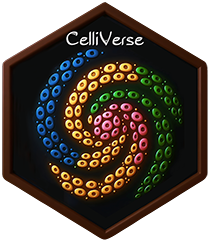
celliverse is an R package for single-cell RNA-seq analysis that introduces a family of methods based on Expression-Weighted Centered Scaled Ranks (EWCSR).
The main goals of the package are:
- High-quality unsupervised and data-driven clustering
- Discovery of specific positive and negative markers
- Marker purity evaluation
- Feature (marker) selection across the entire dataset for dimension reduction and visualization
- Cell type, subtype, and cell-state annotation using the CelliVerse Marker DB, large language models (LLMs), or portable LLM-ready prompts
- Natural-language access to CelliVerse workflows through the optional CelliVerse Agent
In brief: CelliVerse provides an integrated workflow for reference-free clustering, marker discovery, marker evaluation, feature selection, and cell annotation. Annotation can be performed against the curated CelliVerse Marker DB, directly through supported local or cloud LLMs, or by generating a portable prompt for use with a chatbot of your choice.
🤗 Interactive Demo: A lightweight browser-based
demo of selected CelliVerse functionality is available through Hugging
Face Spaces. The current demo provides an interactive ClustoCell PBMC3K
mini-demo using precomputed outputs.
✨ Feature Explorer: Explore the features and
capabilities of the CelliVerse R package through an interactive
experience.
🧭 CelliVerse Adoption Hub: If you are new to
CelliVerse, the interactive Adoption Hub provides a compact guide for
choosing the right workflow and function, following the minimal analysis
route, understanding how the major functions connect, and
troubleshooting common first-use issues.
What you will learn
In this vignette, you will learn how to:
- Run
clustoCell()for unsupervised clustering and marker discovery - Add ClustoCell labels back to a Seurat object
- Select informative dataset-level features for visualization
- Identify and visualize cluster-specific and cell-subset-specific markers
- Assess marker purity
- Annotate cell types using the CelliVerse Marker DB
- Perform direct LLM-based annotation with
typoClust(mode = "ceLLMarkup")orceLLMarkup() - Generate a portable, interactive LLM-ready annotation prompt with
typoPrompt() - Install and run the optional CelliVerse Agent for natural-language analysis
- Scale ClustoCell to large datasets using sketching and label transfer
Core Workflows
The main functions can be grouped into five complementary workflows:
Cluster and discover
Identify biologically coherent populations and their markers directly from the data.
Inspect and evaluate
Study cluster, sub-cluster, and cell-subset markers and assess marker purity.
Annotate
Use curated marker knowledge, a connected LLM, or a portable prompt for any chatbot.
Interact through the Agent
Run CelliVerse workflows from a local browser interface using natural-language requests.
Integrate and visualize
Add results back to the dataset, select features, transfer labels, and create visual summaries.
Joint clustering and marker discovery
-
clustoCell (
clustoCell()) performs unsupervised clustering of single-cell data using expression-weighted centered scaled ranks (EWCSR), followed by identification of cluster-specific markers and optional sub-clustering.
Cluster and cell subset marker identification, assessment and visualization
-
markoClust (
markoClust()) identifies markers in predefined cell clusters and can optionally identify sub-clusters using Leiden community detection.
-
markoCell (
markoCell()) identifies and ranks positive and negative marker genes for a specified set of cells, which may correspond to clusters, sub-clusters, arbitrary cell subsets, or even single cells.
-
markerPurity
(
markerPurity()) quantifies marker purity by evaluating expression specificity within clusters or user-defined cell subsets.
-
markoClustVis
(
markoClustVis()) generates a faceted dot plot for visualizing marker genes across clusters, sub-clusters, or cell subsets stored in a ClustoCell or MarkoCell object.
Cell type annotation
-
typoClust (
typoClust()) annotates clusters, sub-clusters, or arbitrary cell subsets using either the curated CelliVerse Marker DB or LLM-based annotation throughceLLMarkup(). When major clusters and their sub-clusters are available, hierarchical annotation is inherited from the major cluster by default.
-
ceLLMarkup (
ceLLMarkup()) provides a direct, provider-agnostic LLM annotation interface for marker tables, SeuratFindAllMarkers()results, or positive/negative marker panels, with the same default major-cluster inheritance when a major/sub-cluster hierarchy is supplied.
-
typoPrompt (
typoPrompt()) converts marker results from a ClustoCell or MarkoCell object into a structured LLM-ready prompt that can be reviewed, copied, saved, or pasted into any suitable chatbot or LLM.
-
typoClustVis
(
typoClustVis()) visualizes cell-type annotation results stored in a TypoClust-compatible object.
CelliVerse Agent
-
install_celliverse_agent
(
install_celliverse_agent()) prepares the local machine to run the optional browser-based CelliVerse Agent and can optionally configure a local model runtime.
-
run_celliverse_agent
(
run_celliverse_agent()) launches the local API and web interface, allowing CelliVerse workflows to be requested through natural language.
Helper and other visualization functions
-
addClustoData
(
addClustoData()) adds major cluster and/or sub-cluster labels stored in a ClustoCell object to the cell-level metadata of a Seurat or SingleCellExperiment object.
-
addTypoData (
addTypoData()) adds inferred cell type annotations from a TypoClust object to the metadata of a Seurat or SingleCellExperiment object.
-
getDatasetMarkers
(
getDatasetMarkers()) extracts positive, negative, and/or medium markers from major clusters and sub-clusters stored in a ClustoCell object. These markers can be treated as dataset-level features for dimension reduction or machine-learning purposes.
-
featureInspect
(
featureInspect()) searches one or more desired features across all marker collections contained within aClustoCellobject, including global feature collections, cross-cluster markers, major cluster-specific markers, and sub-cluster-specific markers.
-
clustoCell_TransferLabel
(
clustoCell_TransferLabel()) transfers major and sub-cluster labels from a ClustoCell object generated on a sketched (subsampled) dataset to a full-resolution dataset.
-
signatureDotHeatmap
(
signatureDotHeatmap()) generates a dot heatmap summarizing expression of signature-associated features across clusters.
Recommended workflow: Start with
clustoCell() for data-driven clustering and marker
discovery, use addClustoData() to add the results back to
the dataset, apply markoClust() or markoCell()
for focused marker analysis, and then choose the annotation route that
best fits your use case: typoClust(mode = “markerDB”),
direct LLM annotation, or typoPrompt(). The CelliVerse
Agent provides an optional natural-language interface to many of the
same workflows.
CelliVerse Agent
The CelliVerse Agent is an optional local web application that provides a natural-language interface to CelliVerse. It is designed for users who want to work interactively with their single-cell data while retaining access to the package’s R-based analysis functions and generated artifacts.
The Agent is cloud-first, so a local LLM is not
required. You can configure a supported cloud provider and API key in
the Settings page, or use Ollama or
LM Studio for a fully local LLM workflow. The Agent
itself runs locally and, by default, binds to
127.0.0.1.
The Agent accepts common R objects, delimited matrices, Matrix Market/10x inputs, and selected HDF5 files. Large files can also be loaded directly from a server-side path.
Select a cloud or local provider, choose a model, set the temperature, and configure provider API keys.
Ask for clustering, marker discovery, annotation, visualization, or related CelliVerse operations in natural language.
Figures, tables, and generated R objects are collected in one place and can be downloaded individually or together.
Agent and R functions are complementary: The Agent does not replace the standard R interface. You can continue to call CelliVerse functions directly in scripts for reproducible analyses, while using the Agent when a conversational workflow is more convenient.
Preparing the Agent
The first time you use the Agent on a machine,
install_celliverse_agent() can prepare the required R web
stack, create the CelliVerse configuration directory under
~/.celliverse, and detect optional local model
runtimes.
A local model is not required. If Ollama is already available, the
installer can optionally pull a model appropriate for the selected tier.
LM Studio can also be detected through its lms command-line
interface.
# Prepare the machine using the automatic local-model tier.
# If no local runtime is installed, the cloud configuration remains available.
install_celliverse_agent()
# Example: explicitly request the light local tier when Ollama is present
install_celliverse_agent(
tier = "light",
pull_model = TRUE
)The available tier choices are "auto",
"light", "recommended", "strong",
"both", and "all". You can also supply a
specific Ollama model with model =.
Local model requirements: Local LLMs can require substantial RAM and may be slow on CPU-only systems. If you do not specifically need an offline workflow, using a cloud provider is generally the simplest way to start. You can switch provider or model later without reinstalling the Agent.
Launching the Agent
Launch the Agent with:
By default, the server runs on localhost and opens the interface in a
browser during an interactive R session. If the default port is already
in use, port_scan = TRUE allows the launcher to search the
next available ports.
For example, you can launch it as a background process so that the R console remains available:
agent_process <- run_celliverse_agent(
background = TRUE
)Provider and model overrides can also be supplied when launching:
run_celliverse_agent(
provider = "ollama",
model = "qwen3:8b"
)A typical Agent workflow
Open Data / Upload and upload a supported file, or provide a
server-side path for a large file. Supported inputs include
.rds, .RData/.rda,
.csv/.tsv/.txt/.tab (optionally .gz),
.mtx (optionally .gz) with its sidecar files,
a .zip containing the 10x triplet, and .h5
when hdf5r is installed.
Open Settings to choose the provider and model. Cloud API keys are entered there; Ollama and LM Studio do not require a cloud API key.
Open Chat and describe the task in ordinary language. The Agent selects and runs the appropriate CelliVerse tools.
Open Results to inspect and download generated figures, tables, and R objects. The interface also provides History, Package Browser, Logs, Help, and About pages.
For example, after loading a PBMC dataset you might ask for one specific task at a time:
Model capability matters: Smaller, free, or lightweight local models may occasionally struggle with compound requests that require several tool calls or multiple dependent steps. If a multi-task request is only partially completed, break it into clear single-task messages. Larger and higher-capability models, including many paid models, generally handle multi-step requests more reliably, although performance still depends on the individual model.
run clustoCell on the object
add labels to the Seurat object
generate a UMAP of the object and color cells by
sub-clusters
give me the top 10 ranked markers of C2 and C4
annotate clusters C1-C3
annotate sub-clusters C1-Sub1 and C3-Sub2
Large files: Loading an existing file by server path avoids re-uploading large datasets through the browser. Uploaded or server-loaded data are handled server-side, and the resulting analysis objects are represented to the Agent through object handles rather than being inserted wholesale into the chat.
API keys and locality: Agent API keys are stored
server-side in ~/.celliverse/config.json and are not sent
back to the browser. When a cloud LLM provider is selected, the
information included in model requests is sent to that provider
according to its service and privacy policies. Choose Ollama or LM
Studio when a fully local LLM workflow is required.
Example Workflow
We will demonstrate the full workflow using the well-known pbmc3k dataset (2,700 PBMCs).
Loading packages and data
Reproducible vignette: Computationally intensive steps are shown as code but are not re-run when this vignette is viewed or during CRAN package checks. The displayed results were precomputed from the PBMC3K workflow using the same code shown below. The source vignette and reproducibility assets are available from the CelliVerse development repository.
library(celliverse)
library(Seurat)
library(patchwork)
library(ggplot2)
library(magrittr)
library(data.table)
base::load("celliverse_vignette_results.rda")
invisible(
list2env(
celliverse_vignette_results,
envir = knitr::knit_global()
)
)Input format: In this vignette, the example dataset is loaded as a Seurat object and analyzed from the raw count matrix. Most CelliVerse functions are designed to work naturally with Seurat-based single-cell workflows.
You may either load a Seurat object or create one.
SeuratData::InstallData("pbmc3k")
pbmc3k_so <- SeuratData::LoadData("pbmc3k")To create a Seurat object you may adjust the thresholds for the initial cell and feature (gene) filtration and perform additional quality checks such as the percentage of mitochondrial DNA.
pbmc3k_so <- CreateSeuratObject(
counts = pbmc3k,
project = "pbmc3k",
min.cells = 3,
min.features = 200
)Running ClustoCell
Conceptual note: ClustoCell uses expression-weighted centered scaled ranks (EWCSR) to capture within-cell transcriptional structure and identify biologically coherent cell populations without relying on predefined reference labels.
We will not run the default Seurat clustering here; instead, we demonstrate celliverse clustering using clustoCell from the beginning.
clustoCell() is the main entry point of the package. It
performs the following steps:
- EWCSR transformation
- Leiden clustering
- Marker discovery
- (Optional) sub-clustering
clustoCell can perform clustering and marker detection directly on raw data, so you do not need to normalize your data beforehand. You can simply provide your Seurat object as input.
Although clustoCell() can be applied directly to very
raw expression data, it is recommended to remove low-quality cells and
noise-associated genes beforehand. Genes detected in very few cells and
cells expressing very few genes may introduce noise into the EWCSR
representation and negatively affect clustering and marker
identification.
As a general starting point, genes may be retained if they are expressed in at least five cells, while cells may be retained if they express at least 200 genes. Additional quality-control criteria, such as mitochondrial transcript percentage, should be selected according to the tissue, technology, and expected biology of the dataset.
For a Seurat object containing raw counts, basic gene and cell filtration can be performed as follows:
# Retrieve raw counts
counts <- GetAssayData(
object = pbmc3k_so,
assay = "RNA",
layer = "counts"
)
# Retain genes expressed in at least five cells
keep_genes <- Matrix::rowSums(counts > 0) >= 5
pbmc3k_so <- subset(
x = pbmc3k_so,
features = rownames(counts)[keep_genes]
)
# Calculate mitochondrial transcript percentage
pbmc3k_so[["percent.mt"]] <- PercentageFeatureSet(
object = pbmc3k_so,
pattern = "^MT-",
assay = "RNA"
)
# Retain cells expressing at least 200 genes and with
# less than 10% mitochondrial transcripts
pbmc3k_so <- subset(
x = pbmc3k_so,
subset =
nFeature_RNA >= 200 &
percent.mt < 10
)Filtering normalized data: Similar gene- and cell-level filtration can also be applied when raw counts are unavailable, provided that the normalized expression matrix preserves zero values, as is generally the case for standard log-normalized single-cell data. However, mitochondrial transcript percentages calculated from normalized values are only approximations and are not identical to percentages calculated from raw counts.
For a Seurat object containing only log-normalized data in the
data layer, the corresponding filtration can be performed
as follows:
# Retrieve log-normalized expression data
data <- GetAssayData(
object = pbmc3k_so,
assay = "RNA",
layer = "data"
)
# Retain genes expressed in at least five cells
keep_genes <- Matrix::rowSums(data > 0) >= 5
pbmc3k_so <- subset(
x = pbmc3k_so,
features = rownames(data)[keep_genes]
)
# Retrieve the filtered normalized expression matrix
data <- GetAssayData(
object = pbmc3k_so,
assay = "RNA",
layer = "data"
)
# Calculate the number of detected genes if it is not
# already available in the cell-level metadata
if (!"nFeature_RNA" %in% colnames(pbmc3k_so[[]])) {
pbmc3k_so$nFeature_RNA <- Matrix::colSums(data > 0)
}
# Approximate mitochondrial transcript percentage using
# normalized expression values
mt_genes <- grep(
pattern = "^MT-",
x = rownames(data),
value = TRUE
)
if (length(mt_genes) > 0) {
total_expression <- Matrix::colSums(data)
pbmc3k_so$percent.mt <-
Matrix::colSums(data[mt_genes, , drop = FALSE]) /
total_expression * 100
}
# Retain cells expressing at least 200 genes and with
# less than 10% approximated mitochondrial expression
pbmc3k_so <- subset(
x = pbmc3k_so,
subset =
nFeature_RNA >= 200 &
percent.mt < 10 # You may exclude percent MT filtration when the data is pre-normalized.
)The thresholds shown above are general starting points rather than fixed requirements and should be adjusted according to the dataset and experimental context.
✨ Feature Explorer: Explore the features and
capabilities of ClustoCell through an interactive experience.
By default, the function uses the count layer from the RNA assay. If your assay or layer names are different from the standard ones, you can adjust the corresponding arguments.
If you want to use already normalized data (e.g. the data
layer), make sure to set log1p = FALSE. This is important
because log1p is set to TRUE by default and is
intended for raw (or any non-log-transformed) data.
pbmc_clustoCell <- clustoCell(
data = pbmc3k_so,
seed = 121,
verbose = FALSE
)Alternatively, you can provide the input data as a matrix (either a
base matrix or a dgCMatrix) instead of a
Seurat object.
However, it is recommended to use a sparse matrix of class
dgCMatrix, as it is more memory-efficient and better suited
for large datasets.
pbmc3k_mat <- pbmc3k_so[["RNA"]]$counts
# Or pbmc3k_mat <- pbmc3k_so[["RNA"]]$counts %>% as.matrix()
pbmc_clustoCell <- clustoCell(
data = pbmc3k_mat,
seed = 121,
verbose = FALSE
)Now let’s have a look at the ClustoCell object
print(pbmc_clustoCell)
#> An object of class ClustoCell
#> Slots:
#> o clusters [list]
#> o markers [list]
#> o quiescent_cells [character]
#> o globally_pure_ranked [character]
#> o globally_pure_high [character]
#> o globally_pure_medium [character]
#> Summary:
#> o Major clusters: 5
#> o Sub-clusters: 12
#> o Quiescent cells: 2
#> o Globally Pure Ranked Features: 263
#> o Globally Pure High Features: 2747
#> o Globally Pure Medium Features: 4027As we see ClustoCell has identified 5 major clusters and 12 sub-clusters. Cells that don’t have ‘high’ markers are filtered out and labeled as quiescent, indicating they are in a resting or inactive state.
Tip: The cluster and sub-cluster memberships are
available in pbmc_clustoCell$clusters.
Adding cluster labels to the dataset
You can easily add the cluster labels back to your Seurat or SingleCellExperiment object.
By default, both the major clusters and
sub-clusters are added to the object’s metadata as two
columns named "ClustoCell_Clusters" and
"ClustoCell_SubClusters".
You can change these column names if needed, and you can also choose whether to add only major clusters, only sub-clusters, or both by adjusting the corresponding arguments.
pbmc3k_so <- addClustoData(
obj = pbmc3k_so,
clustoCell = pbmc_clustoCell
)Dataset feature selection
Tip: getDatasetMarkers() can be used to
select informative dataset-level features before dimensionality
reduction and visualization. This provides a CelliVerse-driven
alternative to relying only on highly variable genes.
To visualize the data, you can first perform feature selection as shown below, and then run dimensionality reduction using the selected features (markers), rather than highly variable genes (HVGs).
You can choose to select features based on major clusters, sub-clusters, or both. You can also decide whether to include positive, negative, or medium markers, or any combination of these.
In addition, you can adjust the threshold for marker selection using the corresponding arguments.
# Performing feature selection
pbmc3k_markers <- getDatasetMarkers(
obj = pbmc_clustoCell,
pos_thresh = 85
)We then use the selected features (i.e.,
pbmc3k_markers$combined_markers) as input to the
ScaleData and RunPCA functions.
# Running Seurat pipeline for dimension reduction
# while using ClustoCell-based selected features
pbmc3k_so <- NormalizeData(pbmc3k_so,
normalization.method = "LogNormalize",
scale.factor = 10000)
pbmc3k_so <- ScaleData(pbmc3k_so,
features = pbmc3k_markers$combined_markers)
pbmc3k_so <- RunPCA(pbmc3k_so, npcs = 10, seed.use = 121,
features = pbmc3k_markers$combined_markers,
reduction.name = "clustoCell_pca")
pbmc3k_so <- RunUMAP(pbmc3k_so, dims = 1:10, seed.use = 121,
reduction = "clustoCell_pca",
reduction.name = "clustoCell_umap")
# UMAP visualization of major clusters
DimPlot(pbmc3k_so, reduction = "clustoCell_umap",
cols = pbmc3k_so$ClustoCell_Clusters %>%
unique() %>%
length() %>%
DiscretePalette(),
group.by = "ClustoCell_Clusters") +
labs(x = NULL, y = NULL,
subtitle = paste0(
"Based on ",
length(pbmc3k_markers$combined_markers),
" features"
))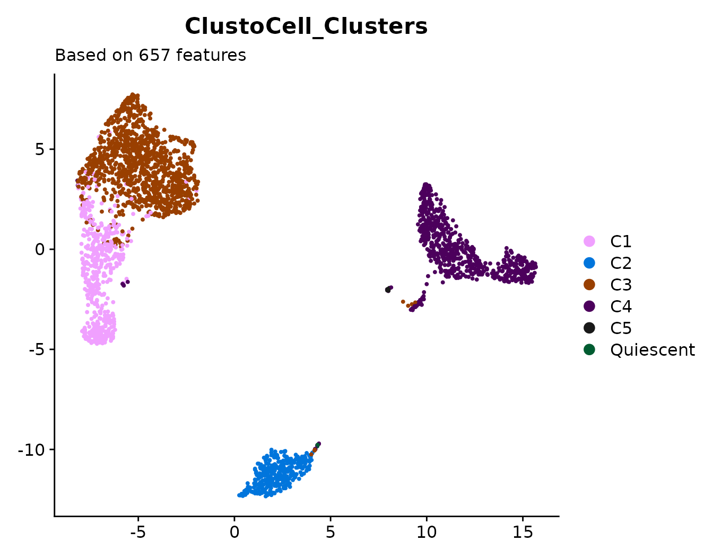
The UMAP shows the major ClustoCell populations identified from the EWCSR-based clustering workflow.
# UMAP visualization of sub-clusters
DimPlot(pbmc3k_so, reduction = "clustoCell_umap",
cols = pbmc3k_so$ClustoCell_SubClusters %>%
unique() %>%
length() %>%
DiscretePalette(),
group.by = "ClustoCell_SubClusters") +
labs(x = NULL, y = NULL,
subtitle = paste0(
"Based on ",
length(pbmc3k_markers$combined_markers),
" features"
))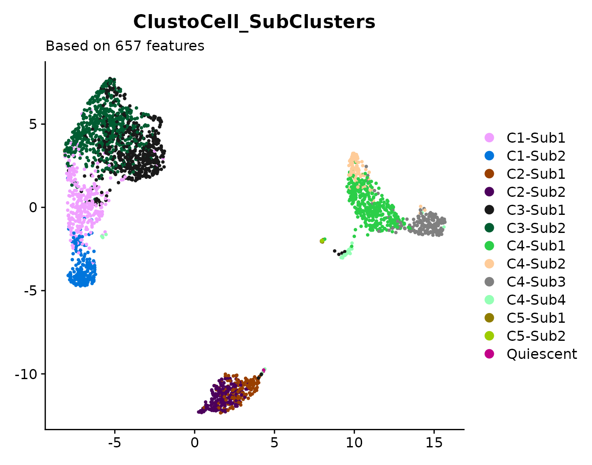
The sub-cluster visualization provides a finer-resolution view of transcriptionally distinct cell states within the major ClustoCell clusters.
Cluster marker evaluation
You can visualize the top markers for your clusters using the
markoClustVis function.
You can choose to display positive, negative, or medium markers, or any combination of these. In this example, we show the top positive markers for the major clusters in the pbmc3k dataset.
markoClustVis(obj = pbmc_clustoCell,
desired_sets = paste("C", 1:5, sep = ""))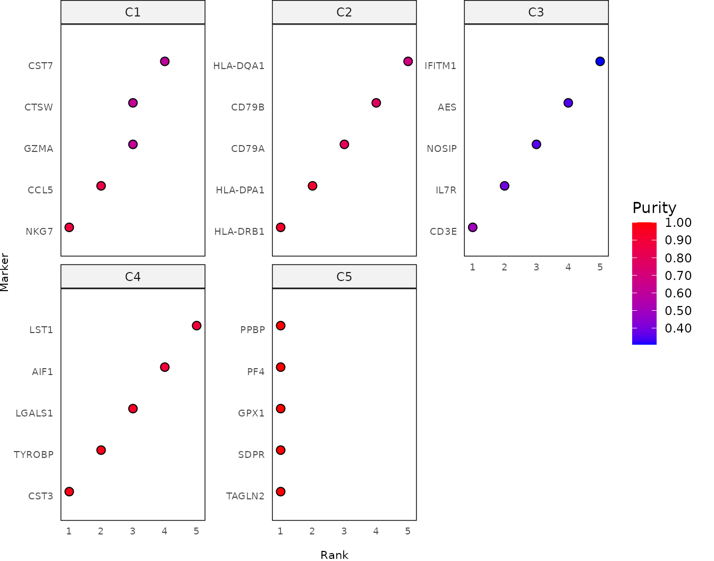
Tip: The cluster and sub-cluster markers are
available in pbmc_clustoCell$markers.
Inspecting desired features
In cases where you would like to inspect one or more features (genes)
to determine whether they are marker genes for particular clusters or
sub-clusters, you can use the featureInspect() function.
For example, the following code inspects the genes NKG7
and HLA-DRB1 among the positive markers of the major
clusters.
knitr::kable(
featureInspect(
clustoCell = pbmc_clustoCell,
features = c("NKG7", "HLA-DRB1"),
level = "Major cluster",
type = "Positive"
)
)| Feature | Level | Membership | Type | Gini_Score | Purity | Rank |
|---|---|---|---|---|---|---|
| NKG7 | Major cluster | C1 | Positive | 0.1183432 | 0.8816568 | 1 |
| HLA-DRB1 | Major cluster | C1 | Positive | 0.9053254 | 0.0946746 | 67 |
| HLA-DRB1 | Major cluster | C2 | Positive | 0.0724638 | 0.9275362 | 1 |
| HLA-DRB1 | Major cluster | C3 | Positive | 0.9709763 | 0.0290237 | 146 |
| HLA-DRB1 | Major cluster | C4 | Positive | 0.3070301 | 0.6929699 | 12 |
As shown above, NKG7 is the top-ranked positive marker of C1 (NK and CD8 T cells), whereas HLA-DRB1 is ranked 1st and 12th among the positive markers of C2 (B cells) and C4 (Mononuclear phagocytes), respectively. Although HLA-DRB1 is also present among the positive markers of two other clusters, it is not sufficiently highly ranked to be particularly informative for annotating those clusters.
The results can also be visualized by setting the plot
argument to TRUE.
pbmc_clustoCell_NKG7_HLA_DRB1_plt <-
featureInspect(
clustoCell = pbmc_clustoCell,
features = c("NKG7", "HLA-DRB1"),
level = "Major cluster",
type = "Positive",
plot = TRUE
)
pbmc_clustoCell_NKG7_HLA_DRB1_plt$plot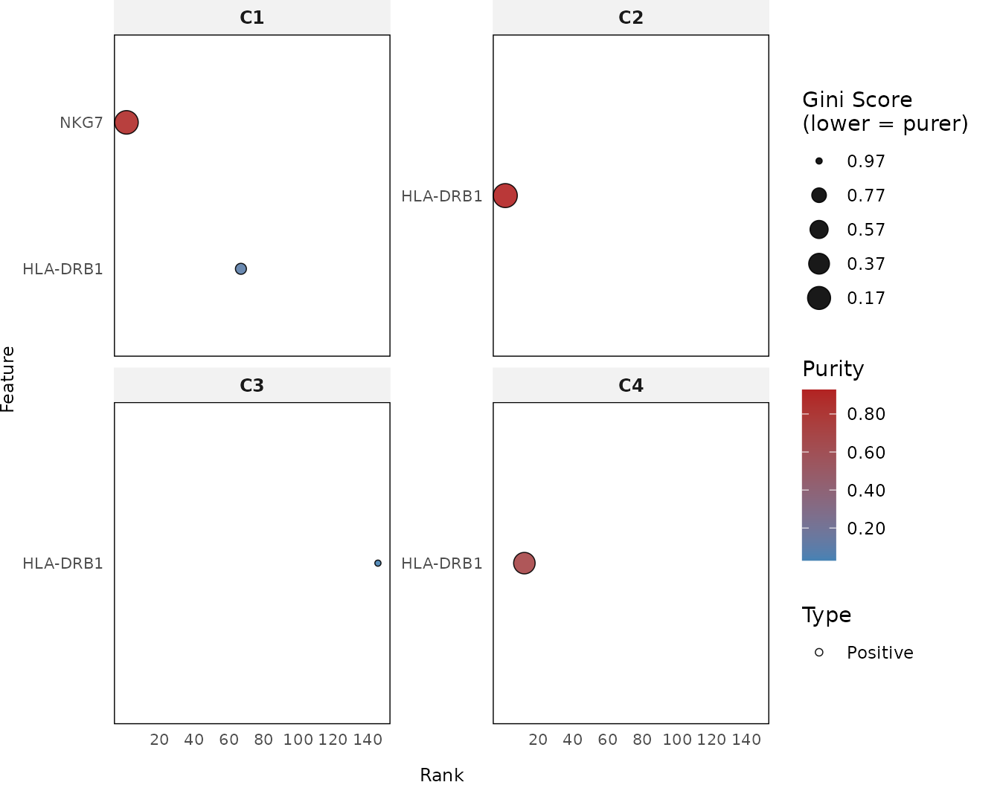
In some cases, your feature(s) of interest may not be identified
among the major-cluster or sub-cluster markers. In such situations, you
can relax the search by leaving the level and
type arguments as NULL (their default values),
allowing featureInspect() to search across all available
marker collections, including the global feature collections.
For example, if you inspect the general PBMC marker genes
CD52, CD53, CD48, and PTPRCAP, while
restricting the search to the major-cluster and sub-cluster markers, no
matches are returned because these genes are not informative for
distinguishing individual cell populations. However, when the
level and type arguments are left at their
default values, these genes are identified among the globally pure
ranked features.
This behaviour is expected because these genes typically exhibit very
similar expression patterns across most or all cells in the PBMC
dataset. During clustoCell() analysis, such globally
uninformative features are automatically detected according to the
specified gini_thresh, excluded from the clustering and
marker identification procedures to improve sensitivity, and stored in
the globally_pure_ranked component of the returned
ClustoCell object for future inspection.
knitr::kable(
featureInspect(
clustoCell = pbmc_clustoCell,
features = c("CD52", "CD53", "CD48", "PTPRCAP")
)
)| Feature | Level | Membership | Type | Gini_Score | Purity | Rank |
|---|---|---|---|---|---|---|
| CD52 | Global | Global Features | Pure Ranked | NA | NA | NA |
| CD53 | Global | Global Features | Pure Ranked | NA | NA | NA |
| CD48 | Global | Global Features | Pure Ranked | NA | NA | NA |
| PTPRCAP | Global | Global Features | Pure Ranked | NA | NA | NA |
Tip: Inspecting the global feature collections is
particularly useful when analysing datasets composed of a single cell
type, where many informative features including canonical marker genes
of that cell type are expected to be expressed uniformly across nearly
all cells. Such features are typically stored in the
globally_pure_ranked or globally_pure_high
slot of the ClustoCell object and are not reported as cluster specific
markers. See the Working with Single
Cell Type Datasets section.
Identifying cluster markers
While clustoCell performs clustering together with
marker detection, most clustering methods do not provide markers for
each cluster. The markoClust function allows you to
identify and rank markers for clusters that you have already defined
using other methods.
For example, you may have identified clusters using the Seurat clustering pipeline and want to find the top markers for each cluster to help determine their cell types or subtypes.
Optionally, markoClust can also identify sub-clusters
within each cluster while simultaneously detecting their markers
(identify_subclusters = TRUE).
In the example below, we first run the standard Seurat clustering
pipeline on the pbmc3k dataset, and then use markoClust to
identify the top markers for each cluster.
# Running the standard Seurat clustering pipeline
pbmc3k_so <- FindVariableFeatures(pbmc3k_so,
selection.method = "vst",
nfeatures = 2000)
pbmc3k_so <- ScaleData(pbmc3k_so)
pbmc3k_so <- RunPCA(pbmc3k_so, npcs = 10, seed.use = 121)
pbmc3k_so <- FindNeighbors(pbmc3k_so, dims = 1:10,
verbose = FALSE)
pbmc3k_so <- FindClusters(pbmc3k_so, resolution = 0.5,
random.seed = 121,
verbose = FALSE)
pbmc3k_so <- RunUMAP(pbmc3k_so, dims = 1:10, seed.use = 121)
# UMAP visualization of sub-clusters
DimPlot(pbmc3k_so, reduction = "umap",
group.by = "seurat_clusters") +
labs(x = NULL, y = NULL)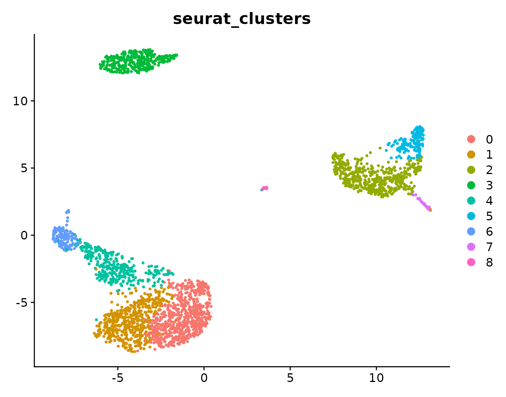
# Running markoClust on Seurat generated clusters (seurat_clusters)
pbmc3k_markoClust <- markoClust(data = pbmc3k_so,
cluster_labels = "seurat_clusters",
seed = 121,
verbose = FALSE)Now, let’s visualize the top positive markers identified by
markoClust for the Seurat clusters in the pbmc3k
dataset.
markoClustVis(obj = pbmc3k_markoClust)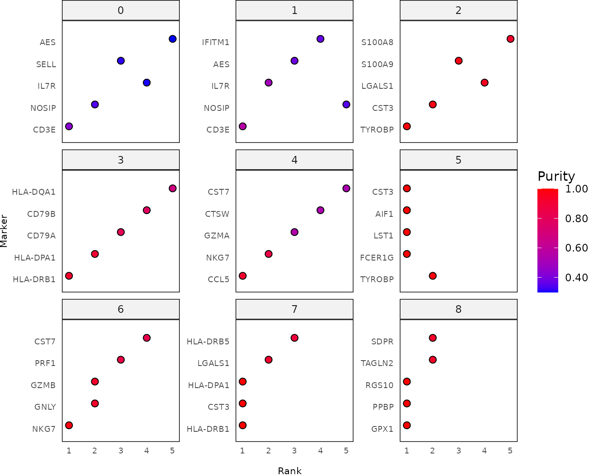
Identifying cell subset markers
In some cases, you may want to find markers for a specific
subset of cells, rather than for an entire cluster. The
markoCell function is designed for this purpose and can
identify markers for both user-defined clusters and
selected cell subsets.
More generally, markoCell is useful whenever you want to
study the markers and identity of any selected group of cells.
For example, suppose you cluster the same dataset using both ClustoCell and Seurat, and then compare the results. You may notice that most cells from a Seurat cluster match one ClustoCell cluster, but a small subset of cells is assigned differently.
# Visualizing the confusion matrix of ClustoCell and Seurat clusters
table(pbmc3k_so$seurat_clusters, pbmc3k_so$ClustoCell_Clusters) %>%
as.data.frame() %>%
data.table::setnames(c("Seurat clusters",
"ClustoCell clusters", "Count")) %>%
ggplot(aes(x = `ClustoCell clusters`,
y = `Seurat clusters`,
fill = Count)) +
geom_point(size = 5, shape = 21) +
geom_text(aes(label = Count), vjust = -1) +
scale_fill_gradient(low = "white",
high = scales::muted("#DC0000FF")) +
theme_minimal()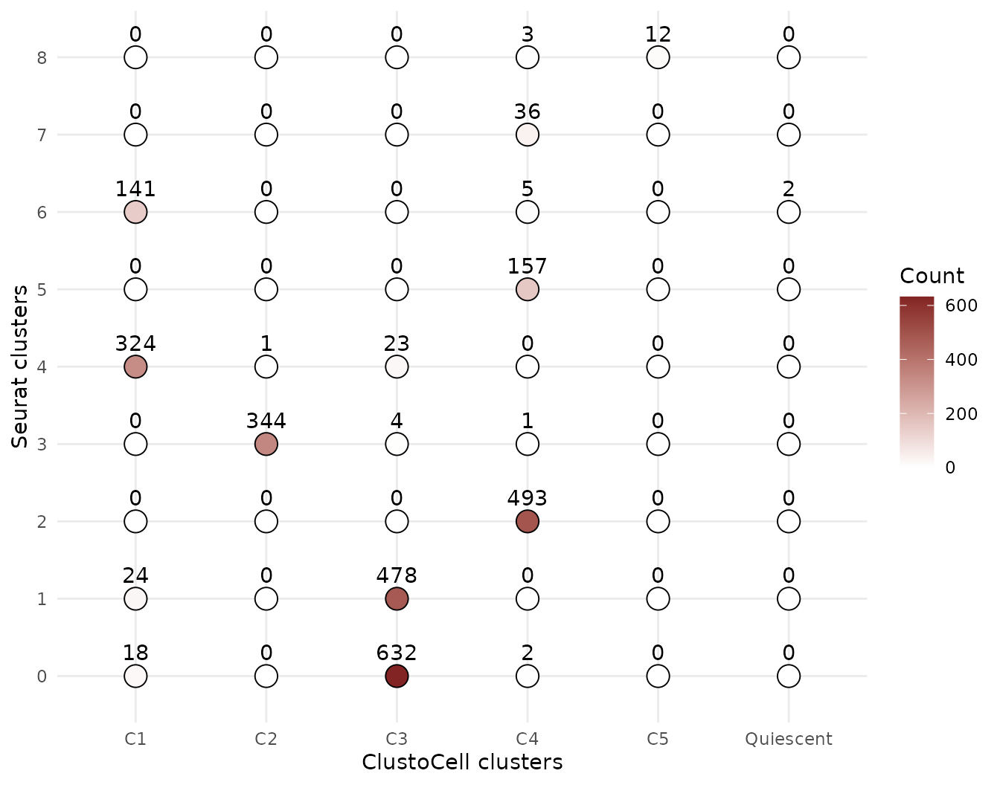
Use case: markoCell() is especially
useful for investigating small or ambiguous subsets of cells, such as
cells assigned differently by two clustering methods.
In this example, Seurat cluster 1 contains 502 cells and is annotated as memory CD4+ T cells based on its markers. Of these, 478 cells match ClustoCell cluster C3, while 24 cells match ClustoCell cluster C1.
ClustoCell cluster C3 mostly corresponds to Seurat cluster 0/1 (naive/memory CD4+ T cells), whereas ClustoCell cluster C1 mainly corresponds to Seurat cluster 4 (CD8+ cytotoxic T cells). This makes the 24 cells of interest, as they are assigned differently by the two methods.
To better understand their identity, you can use
markoCell to identify the key markers for this subset and
compare them with the markers of ClustoCell clusters C3 and C1, as well
as Seurat clusters 1 and 4.
seurat_1_clustoCell_C1 <- colnames(pbmc3k_so)[
pbmc3k_so$seurat_clusters == 1 &
pbmc3k_so$ClustoCell_Clusters == "C1"
]
length(seurat_1_clustoCell_C1)
pbmc3k_1_C1_markoCell <- markoCell(data = pbmc3k_so,
desired_cells = list(
"s_1_cc_C1" = seurat_1_clustoCell_C1
),
seed = 121,
verbose = FALSE)Now let’s visualize the top markers of this subset of cells.
markoClustVis(obj = pbmc3k_1_C1_markoCell)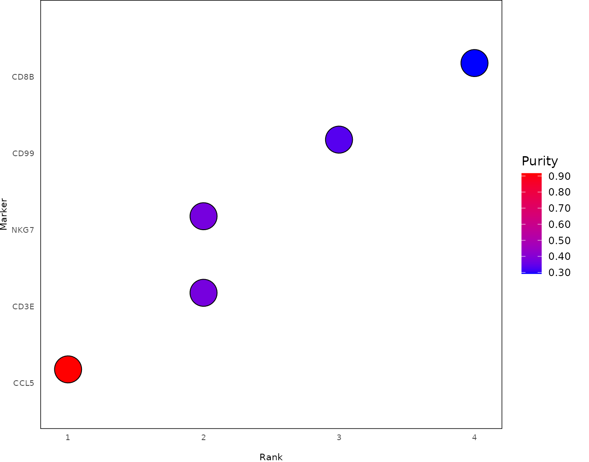
The results show that the top 5 markers of these 24 cells closely match those of Seurat cluster 4 (CD8+ cytotoxic T cells) and ClustoCell cluster C1. This suggests that ClustoCell has more accurately grouped these cells with cytotoxic cells, while Seurat has placed them with memory CD4+ T cells.
Working with Single Cell Type Datasets
There are situations where you may wish to cluster a dataset composed of only a single cell type in order to identify its constituent cell subtypes or cell states and their associated marker genes. For example, upstream enrichment methods such as Fluorescence-Activated Cell Sorting (FACS) physically isolate a specific cell population before sequencing, resulting in a dataset that is highly enriched for the desired cell type. Although ClustoCell is well suited for identifying cell subtypes and states within such datasets, there are several important considerations.
- As described in the featureInspect
section, when the input dataset consists of a single cell type, many
canonical marker genes for that cell type are expected to be expressed
uniformly across nearly all cells. Consequently, these features are
typically stored in the
globally_pure_rankedorglobally_pure_highslots of the ClustoCell object. As a result, the top-ranked markers identified for each cluster primarily represent markers that distinguish the corresponding cell subtype or cell state rather than the parent cell type itself. To illustrate this, we subset the PBMC3K dataset to CD8 T cells (C1-Sub1) and rerunclustoCell()on the resulting subset.
# Subsetting the dataset to C1-Sub1 (CD8 cells)
pbmc3k_C1_Sub1_CD8_so <- subset(pbmc3k_so, subset = ClustoCell_SubClusters == "C1-Sub1")
# Running ClustoCell
pbmc3k_C1_Sub1_CD8_clustoCell <- clustoCell(pbmc3k_C1_Sub1_CD8_so,
identify_subclusters = FALSE,
seed = 121)Using featureInspect(), we can see that several
canonical CD8 T-cell marker genes, including CD3E,
GZMA, GZMK, CCL5, and
NKG7, are identified as globally pure ranked features
in this subset.
knitr::kable(
featureInspect(
clustoCell = pbmc3k_C1_Sub1_CD8_clustoCell,
features = c("CD3E", "GZMA", "GZMK", "CCL5", "NKG7")
)
)- As shown above, some canonical marker genes of the underlying cell
type may not appear among the cluster-specific markers because they are
stored in the global feature collections. Therefore, annotation of these
subtype/state-focused clusters should make use of the known parent-cell
context as well as the cluster-specific markers.
A practical strategy is to construct a marker panel by combining canonical markers of the input cell type (obtained from the literature or by inspecting the global feature collections) with the top cluster-specific markers (e.g. the top 10–15 positive markers). The resulting panel can be interpreted manually, queried against the Marker DB withtypoClust(mode = "markerDB"), or supplied toceLLMarkup()for LLM-assisted interpretation.
Tip: For pre-enriched single-cell-type datasets,
explicitly provide the known biological context whenever possible. See
the custom marker panel,
ceLLMarkup(), and
typoPrompt() sections for
complementary annotation strategies.
pbmc3k_C1_Sub1_CD8_clustoCell_C1_typoClust <-
typoClust(
desired_pos_markers = list(
my_panel = c(
"CD3E", "GZMA", "GZMK", "CCL5", "NKG7",
pbmc3k_C1_Sub1_CD8_clustoCell$markers$major_clusters$cluster_specific$positive_markers$C1$Feature[1:5]
)
),
tissue = "Blood",
mode = "markerDB",
species = "human",
verbose = FALSE
)Let’s look at the top-ranked predicted cell type (or cell state).
knitr::kable(
pbmc3k_C1_Sub1_CD8_clustoCell_C1_typoClust$cell_types$my_panel[
1, c("Tissue", "Condition", "CellType", "Combined_Score", "Rank")
]
)| Tissue | Condition | CellType | Combined_Score | Rank |
|---|---|---|---|---|
| Blood | Healthy | CD8+ Alpha-Beta T Cell | 6042.57 | 1 |
As expected, the cluster is annotated as CD8+ Alpha-Beta T Cell.
Note: If you are unsure whether your dataset contains multiple cell types or represents a single cell type, inspect both the top cluster-specific markers and the canonical marker genes that may have been assigned to the global feature collections. For example, if one cluster is characterised by canonical NK/CD8 T-cell markers such as NKG7, CCL5, GZMA, CTSW, CST7, and GNLY, whereas another cluster is characterised by canonical B-cell markers such as HLA-DRB1, HLA-DPA1, CD79A, CD79B, HLA-DQA1, and HLA-DQB1, then your dataset clearly contains multiple cell types rather than a single homogeneous cell population.
Assessing purity of markers
In some cases, you may have a specific marker in mind and want to
check how purely it is expressed in a particular cluster or subset of
cells. The markerPurity function allows you to do this
quickly.
It uses the EWCSR framework and Gini coefficient to measure purity, defined as the proportion of cells in the selected group that show high expression of the marker.
For example, you can use markerPurity to examine how
purely the gene NKG7 is expressed in Seurat cluster 6.
pbmc3k_6_NKG7_markerPurity <-
markerPurity(data = pbmc3k_so,
desired_markers = "NKG7",
cluster_labels = "seurat_clusters",
desired_clusters = "6",
seed = 121,
verbose = FALSE)
knitr::kable(pbmc3k_6_NKG7_markerPurity$within_clusters$positive_markers$`6`)| Feature | Gini_Score | Purity | Rank |
|---|---|---|---|
| NKG7 | 0.0337838 | 0.9662162 | 1 |
Cell type annotation
CelliVerse provides several complementary routes for annotating clusters, sub-clusters, or selected cell subsets. You can use the curated CelliVerse Marker DB, connect directly to a local or cloud LLM, or generate a structured prompt that can be pasted into a chatbot of your choice.
The CelliVerse Marker DB is a curated collection of positive and negative marker genes for human and mouse, stored in a sparse matrix format. It combines information from several major resources, including Cell Marker Accordion, CellMarker2, DISCO, PanglaoDB, ScTypeDB, and singleCellBase.
typoClust(mode = “markerDB”)
Matches positive and/or negative markers against the CelliVerse Marker DB. This route does not require an LLM or API key.
typoClust(mode = “ceLLMarkup”)
Uses markers from ClustoCell/MarkoCell objects or supplied panels and
delegates annotation to ceLLMarkup().
ceLLMarkup()
Annotates marker tables, Seurat FindAllMarkers() output, or
marker panels using a supported local or cloud model.
typoPrompt()
Builds a copy-and-paste-ready annotation prompt from a ClustoCell or MarkoCell object without contacting an LLM.
Important: Automatic annotations should be treated as evidence-supported suggestions rather than definitive labels, particularly when distinguishing closely related cell subtypes or transient cell states. The cluster-specific markers identified by ClustoCell or MarkoCell should remain central to biological interpretation, and annotations should be checked against marker biology, experimental context, and prior knowledge.
Major-cluster inheritance: Both
typoClust() and ceLLMarkup() use
inherit_major_clusters = TRUE by default when a major
cluster and its sub-clusters are available. The major cluster is
annotated first, and each sub-cluster is then interpreted using its own
markers within the biological identity of that parent. This can improve
hierarchical consistency, but the parent label should be treated as a
useful prior rather than an absolute constraint. If a major cluster is
broad, mixed, or ambiguously annotated, inheritance can limit recovery
of biologically distinct subtypes or states. In such cases, compare the
results with inherit_major_clusters = FALSE.
Marker DB annotation with typoClust()
typoClust() can annotate marker results stored in one or
more ClustoCell or MarkoCell objects,
or it can work directly from user-supplied positive and/or negative
marker panels.
- Positive markers support a candidate cell identity.
- Negative markers provide exclusionary evidence and can help distinguish closely related identities.
When mode = "markerDB", tissue and
condition can be used to restrict the marker-database
search to biologically relevant contexts. When objects are supplied,
thresh_mode and thresh control how many
top-ranked markers are used for each set.
Controlling major-cluster inheritance
By default, inherit_major_clusters = TRUE. When a
ClustoCell or MarkoCell object contains both major clusters and
sub-clusters, typoClust() first annotates the parent major
cluster from the major cluster’s own markers and then
annotates each sub-cluster from the sub-cluster’s own
markers, while using the parent identity to guide the
interpretation. A parent that is required for this step is annotated and
returned even if it was not explicitly included in
desired_sets. The inheritance used for each sub-cluster is
also recorded in metadata$inheritance.
How the parent identity is used depends on the annotation mode:
- With
mode = "markerDB", the Marker DB is restricted to the parent identity and cell types whose names represent varieties of that identity. Theinherit_score_ratioargument controls whether near-tied parent candidates are also admitted. Its default is0.5. For example, a value of1uses only the rank-1 parent label, whereas0.6also admits any candidate whose score is at least 60% of the rank-1 score. Lower values therefore allow more plausible parent identities and make the inheritance less restrictive.inherit_score_ratiois used only for Marker DB annotation. - With
mode = "ceLLMarkup", the LLM is told the inferred parent identity and is asked which subtype, differentiation state, activation state, or functional state of that parent best matches each sub-cluster.inherit_score_ratiodoes not apply in this mode.
You can disable the hierarchy at any time with
inherit_major_clusters = FALSE. In that case, clusters and
sub-clusters are annotated independently.
PBMC3K example and why this matters: In the PBMC3K
analysis used throughout this vignette, major cluster C1 groups CD8+ T
cells and NK cells, while sub-clustering separates the CD8+ T-cell
population from the NK-cell population. Both lineages arise from common
lymphoid progenitors and share strong cytotoxic transcriptional
programs, so their grouping within a broader major cluster is
biologically plausible. However, the Marker DB does not contain a single
combined label such as “CD8+ T and NK Cell”. The major cluster must
therefore be assigned to the closest available identities. In this
dataset, the top candidates for C1 are NK Cell and CD8+ Alpha-Beta T
Cell, with the second candidate scoring approximately 65% of the first.
If only the rank-1 parent were inherited, for example with
inherit_score_ratio = 1, the CD8+ T-cell sub-cluster could
be restricted to NK-related labels even though its own markers support a
T-cell identity. At the default inherit_score_ratio = 0.5,
both parent candidates are admitted, which preserves a broader and more
appropriate vocabulary for the C1 sub-clusters.
Practical recommendation: Major-cluster inheritance
is most useful when the parent identity is biologically coherent and
confidently annotated. For broad or mixed major clusters, or whenever
the parent annotation is uncertain, it is worth running annotation once
with inheritance enabled and once with inherit_major_clusters =
FALSE, then comparing the resulting labels with the
sub-cluster-specific markers and biological context. This is especially
important for fine cell-type and cell-state annotation, where an
incorrect or overly broad parent label can otherwise propagate to all of
its sub-clusters.
For example, the C1 hierarchy can be compared directly using:
# Hierarchical annotation using the defaults
pbmc_C1_inherited <- typoClust(
objects = list(pbmc_clustoCell),
desired_sets = c("C1", "C1-Sub1", "C1-Sub2"),
tissue = "Blood",
condition = "Healthy",
mode = "markerDB",
inherit_major_clusters = TRUE,
inherit_score_ratio = 0.5,
species = "human",
verbose = FALSE
)
# Annotate the same sets independently
pbmc_C1_independent <- typoClust(
objects = list(pbmc_clustoCell),
desired_sets = c("C1", "C1-Sub1", "C1-Sub2"),
tissue = "Blood",
condition = "Healthy",
mode = "markerDB",
inherit_major_clusters = FALSE,
species = "human",
verbose = FALSE
)You can inspect the available tissue and disease-condition labels as shown below.
data("tissueCondition_types", package = "celliverse")
# Or:
# tissueCondition_types <- celliverse::tissueCondition_types
head(tissueCondition_types$human$diseased_tissueCondition)| Tissue | Condition |
|---|---|
| Adipose Tissue | Breast Cancer |
| Adrenal Gland | Neuroblastoma |
| Adrenal Gland | Adrenal Neuroblastoma |
| Airway | Lung Adenocarcinoma |
| Alveolus of Lung | Non Small Cell Lung Cancer |
| Amniotic Fluid | Amniotic Fluid |
In the example below, we annotate the five major ClustoCell clusters identified in the PBMC3K dataset using the CelliVerse Marker DB.
clustoCell_pbmc_typoClust <- typoClust(
objects = list(pbmc_clustoCell),
desired_sets = paste0("C", 1:5),
tissue = "Blood",
mode = "markerDB",
species = "human",
verbose = FALSE
)Let’s have a look at the top candidates for C1.
head(
clustoCell_pbmc_typoClust$cell_types$C1[
, c("Tissue", "Condition", "CellType", "Combined_Score", "Rank")
]
)| Tissue | Condition | CellType | Combined_Score | Rank |
|---|---|---|---|---|
| Blood | Healthy | NK Cell | 9043.118 | 1 |
| Blood | Healthy | T Cell | 5146.334 | 2 |
| Blood | Healthy | CD8+ Alpha-Beta T Cell | 5038.638 | 3 |
| Blood | Healthy | NKT Cell | 3558.503 | 4 |
| Blood | Healthy | CD8+ Effector T Cell | 3117.143 | 5 |
| Blood | Healthy | Gamma-Delta T Cell | 2907.157 | 6 |
Cell type annotation based on a custom marker panel
Custom marker panels are useful when you have marker genes for a selected cell population but do not have a ClustoCell or MarkoCell object for that population.
For example, suppose the genes NKG7, CCL5, GZMA, CTSW, CST7, GNLY, CD99, GZMB, and PRF1 define a cell subset of interest. You can query this panel against the Marker DB as follows.
my_panel_typoClust <- typoClust(
desired_pos_markers = list(
my_panel = c(
"NKG7", "CCL5", "GZMA", "CTSW",
"CST7", "GNLY", "CD99", "GZMB", "PRF1"
)
),
tissue = "Blood",
mode = "markerDB",
species = "human",
verbose = FALSE
)
head(
my_panel_typoClust$cell_types$my_panel[
, c("Tissue", "Condition", "CellType", "Combined_Score", "Rank")
]
)| Tissue | Condition | CellType | Combined_Score | Rank |
|---|---|---|---|---|
| Blood | Healthy | NK Cell | 13115.828 | 1 |
| Blood | Healthy | CD8+ Alpha-Beta T Cell | 10024.184 | 2 |
| Blood | Healthy | NKT Cell | 6492.006 | 3 |
| Blood | Healthy | T Cell | 6338.380 | 4 |
| Blood | Healthy | CD8+ Effector T Cell | 5386.366 | 5 |
| Blood | Healthy | CD4+ Alpha-Beta Cytotoxic T Cell | 4305.613 | 6 |
Choosing between “n” and
“rank”: With thresh_mode = “n”,
exactly the first thresh rows are selected when available.
With thresh_mode = “rank”, all markers up to the requested
rank are retained, including markers tied at the cutoff rank.
LLM annotation through typoClust()
Set mode = "ceLLMarkup" when you want
typoClust() to use an LLM instead of the Marker DB. This
keeps the familiar ClustoCell/MarkoCell workflow while passing the
selected marker panels to ceLLMarkup() for model-based
annotation.
Supported providers include Ollama and LM Studio for local models, as well as OpenAI, Anthropic, Gemini, DeepSeek, Groq, OpenRouter, and Cerebras for cloud models.
The following example uses a local Ollama model. It is not run while building the vignette because it requires a running model server and model inference.
clustoCell_pbmc_typoClust_llm <- typoClust(
objects = list(pbmc_clustoCell),
desired_sets = paste0("C", 1:5),
tissue = "Blood",
condition = "Healthy",
mode = "ceLLMarkup",
species = "human",
llm_provider = "ollama",
llm_model = "qwen3:8b",
llm_top_k = 3,
verbose = FALSE
)For a cloud provider, specify the corresponding provider and model.
API keys can be supplied through llm_api_key, but for
reproducible and secure workflows it is generally preferable to use the
provider’s standard environment variable rather than hard-coding a key
in an R script.
Inheritance in LLM mode:
inherit_major_clusters = TRUE also applies when
typoClust(mode = “ceLLMarkup”) is used. The LLM first
annotates the major cluster and then receives that parent identity when
interpreting its sub-clusters. Because the parent call can depend on the
model and on the selected marker set, a broad or mixed major cluster may
sometimes lean toward one of its constituent lineages. In that
situation, inheritance can make the downstream subtype/state calls too
restrictive. If the sub-cluster markers suggest a different lineage or a
more appropriate state, compare with inherit_major_clusters =
FALSE. The inherit_score_ratio argument is specific
to mode = “markerDB” and is ignored for LLM annotation.
LLM reproducibility and privacy: LLM annotations can vary across model versions, providers, and sampling settings. Record the provider and model used for important analyses. When using a cloud provider, marker and biological-context information included in the request is sent to that provider. Use Ollama or LM Studio when a fully local annotation workflow is required.
Direct LLM annotation with ceLLMarkup()
ceLLMarkup() can also be called directly when you want
LLM-based annotation without going through typoClust().
Exactly one of the following input modes is supplied:
-
marker_set_list: a named list of marker data frames; -
seuratClusters: a data frame returned by Seurat’sFindAllMarkers(); or -
panels: positive marker panels, optionally accompanied by negative marker panels.
This makes ceLLMarkup() useful when your markers were
generated outside CelliVerse or when you want finer control over
LLM-specific settings such as temperature,
n_markers, and max_retries.
ceLLMarkup() also uses
inherit_major_clusters = TRUE by default. When the supplied
set names contain both a parent and its sub-clusters, for example
C1, C1-Sub1, and C1-Sub2, the
function identifies the major cluster first and then issues a separate
second-stage annotation for the sub-clusters of each parent. The model
is explicitly asked to interpret those sets as subtypes or states of
that parent using the sub-cluster-specific markers. If only sub-clusters
are supplied without their parent, there is no parent identity to
inherit and they are annotated in the ordinary independent manner. Set
inherit_major_clusters = FALSE when you want all supplied
sets to be annotated independently.
For example, the following marker panels can be annotated with a local Ollama model.
pbmc_llm_annotations <- ceLLMarkup(
panels = list(
C1 = c("NKG7", "GNLY", "GZMA", "CST7", "PRF1"),
C2 = c("CD79A", "CD79B", "MS4A1", "CD74", "HLA-DRA")
),
sample_source = "human peripheral blood",
feature_type = "gene",
tissue = "Blood",
condition = "Healthy",
species = "human",
provider = "ollama",
model = "qwen3:8b",
temperature = 0.2,
top_k = 3,
n_markers = 25,
verbose = FALSE
)The returned object is TypoClust-compatible, allowing LLM-based annotations to fit naturally into downstream CelliVerse annotation workflows.
When should I call ceLLMarkup()
directly? Use typoClust(mode = “ceLLMarkup”) when
your markers are already stored in ClustoCell or MarkoCell objects and
you want the usual typoClust() interface. Use
ceLLMarkup() directly when starting from Seurat marker
results, standalone marker tables, or custom panels, or when you need
its LLM-specific controls.
Generate a portable LLM prompt with typoPrompt()
typoPrompt() provides a third LLM-assisted route without
connecting R to a model provider. It extracts marker information from a
ClustoCell or MarkoCell object, adds
the available biological context, and constructs a structured prompt for
cell type, subtype, or cell-state annotation.
This is useful when you prefer to paste the prompt into an existing ChatGPT, Claude, Gemini, or other chatbot session, or when you want to inspect exactly what will be supplied to the model before submitting it.
The returned TypoPrompt object provides:
- a formatted and a raw prompt view;
- collapsible sections for long prompts;
- light and dark appearance;
- one-click copying;
- TXT and HTML downloads;
- printing to PDF; and
- direct plain-text access through
cat()oras.character().
Unlike ceLLMarkup(), generating the prompt itself does
not require an API key, local model, or model
server.
For the same pbmc_clustoCell object used throughout this
vignette, we can generate a prompt for the five major clusters:
pbmc_typoPrompt <- typoPrompt(
object = pbmc_clustoCell,
desired_sets = paste0("C", 1:5),
sample_source = "human peripheral blood",
feature_type = "gene",
species = "human",
tissue = "Blood",
condition = "Healthy",
use_neg_markers = TRUE,
thresh_mode = "n",
thresh = 20,
top_k = 3,
verbose = FALSE
)When TypoPrompt is printed interactively, its full HTML
interface opens in the RStudio Viewer, or in the default browser when
the Viewer is unavailable. The vignette embeds that same HTML renderer
below so that the prompt can be inspected without leaving this page.
The underlying prompt is still an ordinary character-like object and can be inspected directly:
cat(pbmc_typoPrompt)
as.character(pbmc_typoPrompt)It can also be exported programmatically:
saveTypoPrompt(
pbmc_typoPrompt,
file = "pbmc_cell_annotation_prompt.txt",
format = "txt"
)
saveTypoPrompt(
pbmc_typoPrompt,
file = "pbmc_cell_annotation_prompt.html",
format = "html"
)ClustoCell hierarchy awareness: When a prompt
contains a major ClustoCell cluster together with its sub-clusters,
typoPrompt() adds instructions describing that hierarchy.
The LLM is asked to establish the parent identity first and then
interpret sub-clusters as more specific subtypes or states where
supported by the markers.
Adding cell type annotations to the dataset
After obtaining a TypoClust-compatible annotation object from
typoClust() or ceLLMarkup(), you can add the
inferred cell type annotations back to your Seurat or
SingleCellExperiment object using addTypoData().
The cell type labels are added to the metadata as new columns, based
on the specified clusters or cell subsets. You can include multiple
ranked cell type predictions, and optionally refine them to more
specific labels by adjusting the rank_thresh and
refine_thresh arguments.
In the example below, we add the cell type annotations for the 5
major ClustoCell clusters (stored in the
clustoCell_pbmc_typoClust object) back to the PBMC Seurat
object.
pbmc3k_so <- addTypoData(obj = pbmc3k_so,
typoClust = clustoCell_pbmc_typoClust,
clusters = c("ClustoCell_Clusters"))Visualizing cell type annotations
To visualize cell type annotation results stored in a
TypoClust-compatible object, you can use
typoClustVis().
In the example below, we display the Marker DB annotations for the five major ClustoCell clusters in the PBMC3K dataset. The same visualization workflow can be used for compatible LLM-based annotation results.
typoClustVis(clustoCell_pbmc_typoClust,
order_by = "Cluster")
#> ℹ Since `desired_sets` is NULL, all clusters and cell subsets will be visualized!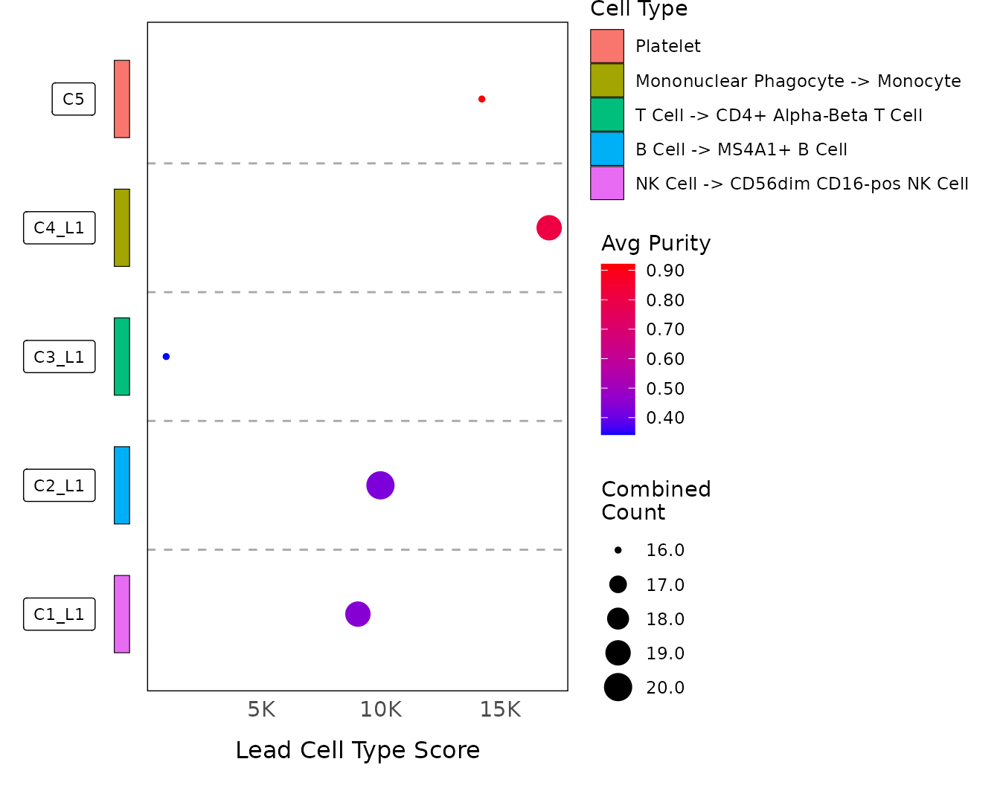
Visualizing signature expressions
In some cases, you may have predefined sets of marker genes
(signatures) and want to see how strongly each cluster in your dataset
expresses these signatures. The signatureDotHeatmap
function can be used to visualize this as a dot heatmap.
For example, suppose you have five gene signatures representing different cell types:
- CD4+ T cells (CD4 T): IL7R, SELL, NOSIP, AES, RARRES3
- B cells (B): CD79A, CD79B, MS4A1, TCL1A, HLA-DRB1
- Cytotoxic lymphocytes (CL): NKG7, GNLY, GZMA, CST7, PRF1
- Mononuclear phagocytes (MNP): S100A8, S100A9, FCN1, AIF1, LST1
- Platelets (PLT): PPBP, PF4, SDPR, GP9, GPX1
First, create a row_data data frame that defines these
signatures, as shown below.
pbmc_row_data <-
data.frame(
Features = c(
"IL7R", "SELL", "NOSIP", "AES", "RARRES3",
"CD79A", "CD79B", "MS4A1", "TCL1A", "HLA-DRB1",
"NKG7", "GNLY", "GZMA", "CST7", "PRF1",
"S100A8", "S100A9", "FCN1", "AIF1", "LST1",
"PPBP", "PF4", "SDPR", "GP9", "GPX1"
),
Signature = rep(c(
"CD4 T",
"B",
"CL",
"MNP",
"PLT"
), each = 5)
)
head(pbmc_row_data)| Features | Signature |
|---|---|
| IL7R | CD4 T |
| SELL | CD4 T |
| NOSIP | CD4 T |
| AES | CD4 T |
| RARRES3 | CD4 T |
| CD79A | B |
Then, you can use signatureDotHeatmap to visualize the
overall expression of these signatures across the five major ClustoCell
clusters in the pbmc3k dataset.
signatureDotHeatmap(
seurat_obj = pbmc3k_so,
cluster_col = "ClustoCell_Clusters",
row_data = pbmc_row_data,
features_col = "Features",
signature_col = "Signature")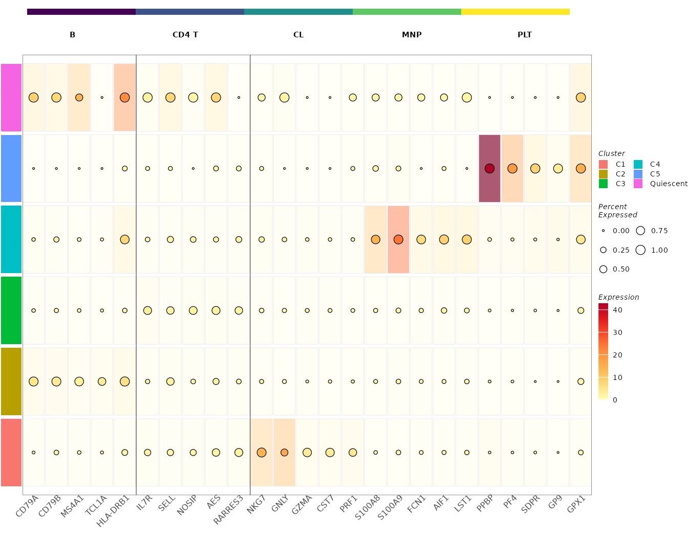
Running ClustoCell on large datasets
Large dataset recommendation: For datasets with hundreds of thousands to millions of cells, consider using sketching or the decoupled sketching plus label-transfer workflow. This can substantially reduce memory use and runtime while preserving the ability to annotate the full dataset.
ClustoCell can take longer to run on large single-cell datasets with
hundreds of thousands or millions of cells. If you run into memory or
performance issues, or simply want to speed up the analysis, you can
enable the sketching option by setting
sketch = TRUE.
Sketching is intended as a scalability strategy. It reduces runtime and memory requirements by clustering a representative subset of cells, while label transfer allows the final annotations to be mapped back to the complete dataset.
When sketching is enabled, ClustoCell (and
markoClust) first performs preprocessing and feature
filtration on the full dataset. It then creates a smaller sketched
dataset, performs clustering and sub-clustering on this subset, and
finally transfers the cluster labels back to the full dataset using an
internal label transfer step. You can control the size of the sketched
dataset using the sketch_ncells argument (default is
5000).
In the example below, we run ClustoCell with sketching enabled on the pbmc3k dataset (for simplicity), but the same approach applies to datasets of any size.
pbmc_clustoCell_withSketch <- clustoCell(
data = pbmc3k_so,
sketch = TRUE,
sketch_ncells = 1500,
identify_subclusters = FALSE,
seed = 121,
verbose = FALSE
)After running ClustoCell, you can add the cluster labels back to the Seurat object and visualize them.
pbmc3k_so <- addClustoData(
obj = pbmc3k_so,
clustoCell = pbmc_clustoCell_withSketch,
major_cluster_name = "ClustoCell_withSketch",
add_sub_clusters = FALSE
)
DimPlot(pbmc3k_so, reduction = "clustoCell_umap",
cols = pbmc3k_so$ClustoCell_withSketch %>%
unique() %>%
length() %>%
DiscretePalette(),
group.by = "ClustoCell_withSketch") +
labs(x = NULL, y = NULL,
subtitle = paste0(
"Based on ",
length(pbmc3k_markers$combined_markers),
" features"
))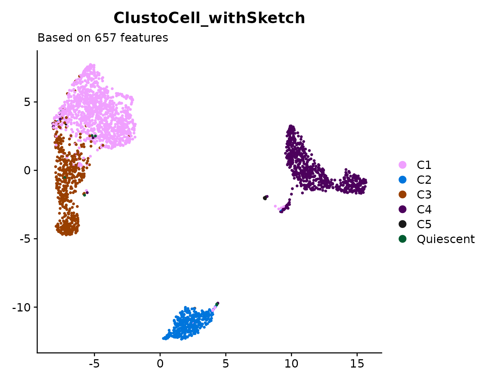
You can also compare the results by looking at a confusion matrix between:
- ClustoCell run on the full dataset, and
- ClustoCell run with sketching and label transfer
table(pbmc3k_so$ClustoCell_withSketch, pbmc3k_so$ClustoCell_Clusters) %>%
as.data.frame() %>%
data.table::setnames(c("ClustoCell with sketch",
"ClustoCell without sketch", "Count")) %>%
ggplot(aes(x = `ClustoCell without sketch`,
y = `ClustoCell with sketch`,
fill = Count)) +
geom_point(size = 5, shape = 21) +
geom_text(aes(label = Count), vjust = -1) +
scale_fill_gradient(low = "white",
high = scales::muted("#DC0000FF")) +
theme_minimal()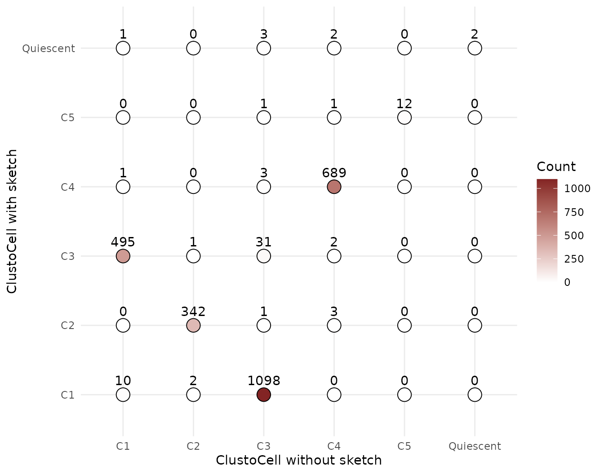
In this example, the results show near-perfect agreement, indicating that sketching provides similar results while being much faster.
Sub-clustering with sketching
When identify_subclusters = TRUE, ClustoCell also
detects sub-clusters. If you use this together with
sketch = TRUE, clustering and sub-clustering are both
performed on the sketched data, and the labels are then transferred back
to the full dataset.
There is also an optional argument,
refine_transferred_subClusters, which changes how
sub-clusters are assigned:
- If
refine_transferred_subClusters = FALSE(default), sub-cluster labels are directly transferred from the sketched data. - If
refine_transferred_subClusters = TRUE, ClustoCell first transfers major cluster labels to the full dataset, and then runs sub-cluster detection separately within each major cluster using the full data.
This refinement step can take more time, but it often improves the quality of sub-clusters. Since sub-clustering is performed within each major cluster (which is much smaller than the full dataset), it is still much faster than running ClustoCell on the entire dataset without sketching.
In the example below, we demonstrate this sub-cluster refinement approach on the pbmc3k dataset.
pbmc_clustoCell_withSketch <- clustoCell(
data = pbmc3k_so,
sketch = TRUE,
sketch_ncells = 1500,
identify_subclusters = TRUE,
refine_transferred_subClusters = TRUE,
seed = 121,
verbose = FALSE
)Afterwards, we again add the cluster labels back to the Seurat object and visualize them.
pbmc3k_so <- addClustoData(
obj = pbmc3k_so,
clustoCell = pbmc_clustoCell_withSketch,
sub_cluster_name = "SubClustoCell_withSketch_refined",
add_major_clusters = FALSE
)
DimPlot(pbmc3k_so, reduction = "clustoCell_umap",
cols = pbmc3k_so$SubClustoCell_withSketch_refined %>%
unique() %>%
length() %>%
DiscretePalette(),
group.by = "SubClustoCell_withSketch_refined") +
labs(x = NULL, y = NULL,
subtitle = paste0(
"Based on ",
length(pbmc3k_markers$combined_markers),
" features"
))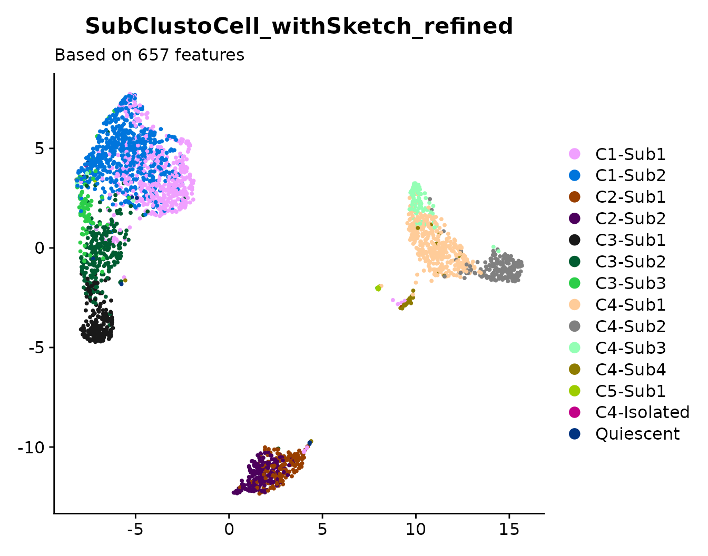
Finally, we compare the results using a confusion matrix between:
- Sub-clusters from the full dataset, and
- Refined sub-clusters obtained with sketching
table(pbmc3k_so$SubClustoCell_withSketch_refined, pbmc3k_so$ClustoCell_SubClusters) %>%
as.data.frame() %>%
data.table::setnames(c("Refined SubClustoCell with sketch",
"SubClustoCell without sketch", "Count")) %>%
ggplot(aes(x = `SubClustoCell without sketch`,
y = `Refined SubClustoCell with sketch`,
fill = Count)) +
geom_point(size = 5, shape = 21) +
geom_text(aes(label = Count), vjust = -1) +
scale_fill_gradient(low = "white",
high = scales::muted("#DC0000FF")) +
theme_minimal() +
theme(axis.text.x = element_text(angle = 25, vjust = 0.8))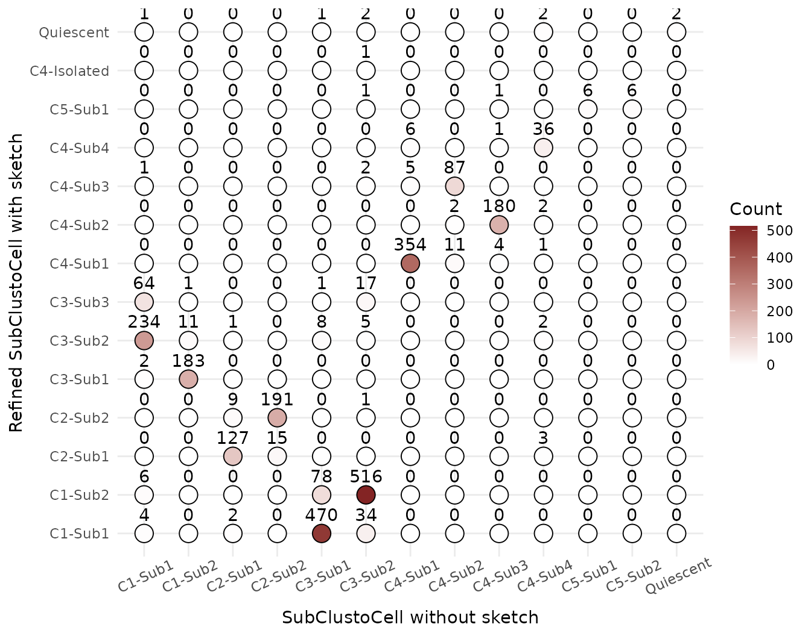
The results show very high agreement, indicating that sketching with refinement maintains accuracy while improving performance for detecting sub-clusters.
Decoupling sketching and label transfer
When to decouple: Use the built-in sketch =
TRUE workflow for moderate-to-large datasets. For very large
datasets or limited computational resources, first create a sketched
object externally, run clustoCell() only on the sketch, and
then transfer labels back to the full dataset.
As mentioned earlier, when running clustoCell or
markoClust with sketch = TRUE, the functions
still perform preprocessing and feature filtration on the full dataset
before sketching. For very large datasets, this initial step can still
be slow and resource-intensive.
In such cases, it is recommended to separate (decouple) the sketching and label transfer steps.
In this approach:
- First, create a smaller dataset by sketching the full data (for
example, using Seurat’s
SketchDatafunction). - Then, run
clustoCellon the sketched dataset only. This avoids preprocessing and feature selection on the full dataset. - Finally, transfer the cluster labels from the sketched data back to
the full dataset using
clustoCell_TransferLabelandaddClustoDatafunctions.
The clustoCell_TransferLabel function returns an updated
ClustoCell object including cluster labels for the full
dataset.
This strategy is especially useful when working with very large datasets or limited computational resources.
Expression-based label transfer: The
“seurat-project” and “seurat-knn” methods
operate on the original expression matrix rather than the EWCSR
representation. The input expression data may consist of raw counts,
log-normalized values, or SCTransform-normalized data, provided that
both the sketched and full datasets use the same normalization
strategy.
In the example below, we demonstrate this approach using the pbmc3k
dataset and perform label transfer using the
"seurat-project" method.
Verify that sketching has reduced the dataset:
Before applying SketchData(), it is recommended to run
NormalizeData() and FindVariableFeatures() on
the input assay. Depending on the structure and preprocessing state of
the input assay, particularly when normalized data or variable features
are unavailable, sketching may not be performed as expected. In such
cases, the newly generated sketch assay may contain the same number of
cells as the original assay. Always inspect the number of cells in the
sketch assay before running clustoCell().
# Set the original assay as the active assay
DefaultAssay(pbmc3k_so) <- "RNA"
# Normalize the input assay and identify variable features
# before applying sketching
pbmc3k_so <- NormalizeData(
object = pbmc3k_so,
assay = "RNA",
verbose = FALSE
)
pbmc3k_so <- FindVariableFeatures(
object = pbmc3k_so,
assay = "RNA",
verbose = FALSE
)
# Record the number of cells in the full dataset
n_full_cells <- length(Cells(pbmc3k_so))
# Sketching the data
pbmc3k_so <- SketchData(
object = pbmc3k_so,
assay = "RNA",
ncells = 1500,
method = "Uniform",
sketched.assay = "sketch",
seed = 121,
verbose = FALSE
)
# Verify that the sketch contains fewer cells than the
# original dataset
n_sketch_cells <- length(Cells(pbmc3k_so[["sketch"]]))
message(
"Full dataset: ", n_full_cells, " cells; ",
"sketched assay: ", n_sketch_cells, " cells."
)
if (n_sketch_cells >= n_full_cells) {
stop(
"Sketching did not reduce the number of cells. ",
"Check that the input assay contains normalized data and ",
"variable features before continuing."
)
}
# Running clustoCell on the verified sketched assay
sketched_pbmc_clustoCell <- clustoCell(
data = pbmc3k_so,
assay = "sketch",
seed = 121,
verbose = FALSE
)Note that in the SketchData() function we set the
sketched.assay argument to “sketch”, and
when running clustoCell() we set the assay
argument to the same newly generated assay, “sketch”.
However, during the label transfer step below using
clustoCell_TransferLabel(), the full-data assay must be
provided. Therefore, we set the assay argument to the
original assay, “RNA”.
# Converting the ClustoCell object to full dataset mode
sketched_pbmc_clustoCell <-
clustoCell_TransferLabel(
clustoCell = sketched_pbmc_clustoCell,
query_expr_mat = pbmc3k_so,
assay = "RNA",
method = "seurat-project",
seed = 121
)
# Transferring the labels to the full dataset
pbmc3k_so <- addClustoData(
obj = pbmc3k_so,
clustoCell = sketched_pbmc_clustoCell,
major_cluster_name = "sketched_ClustoCell",
sub_cluster_name = "sketched_SubClustoCell"
)